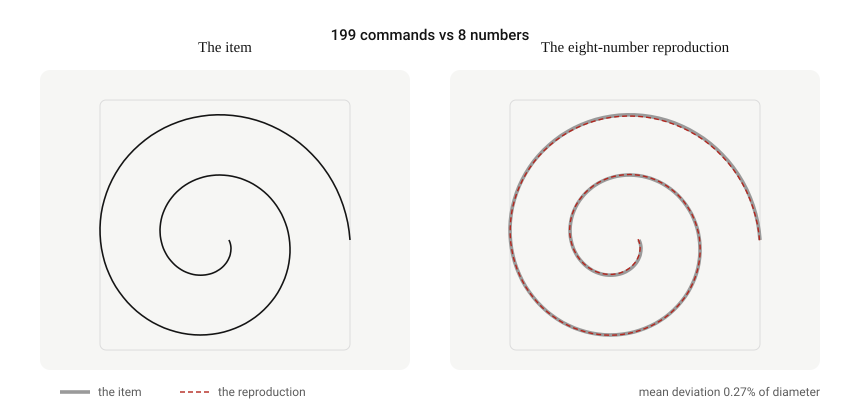
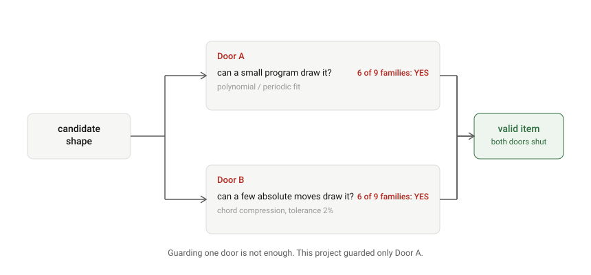
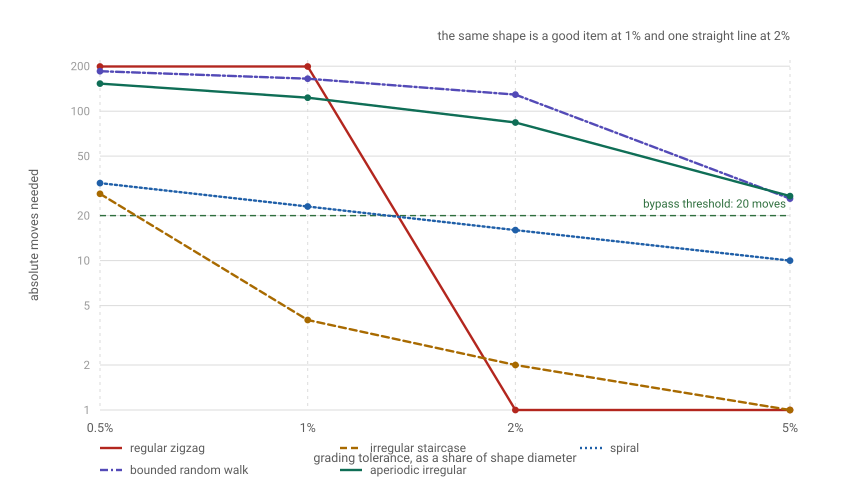
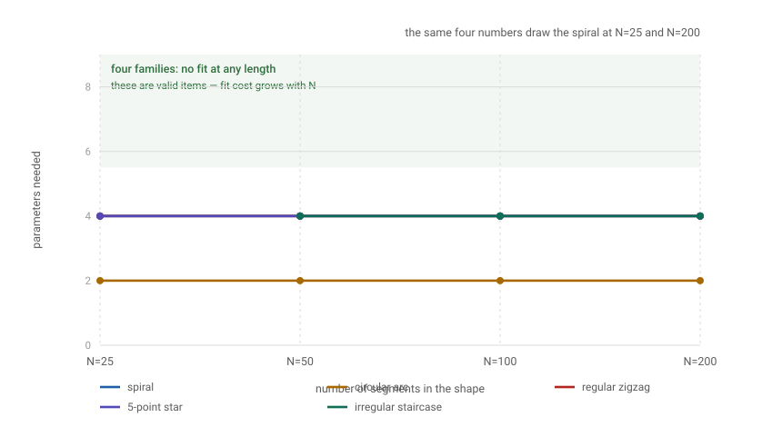
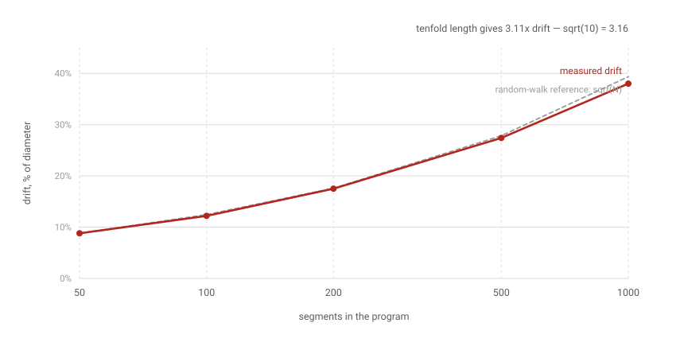
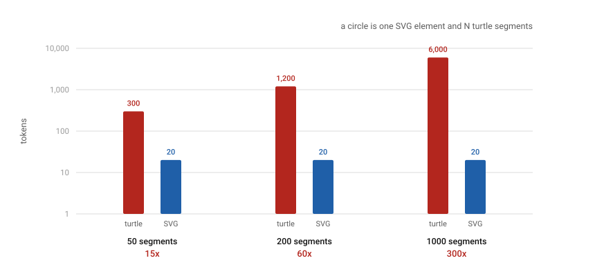
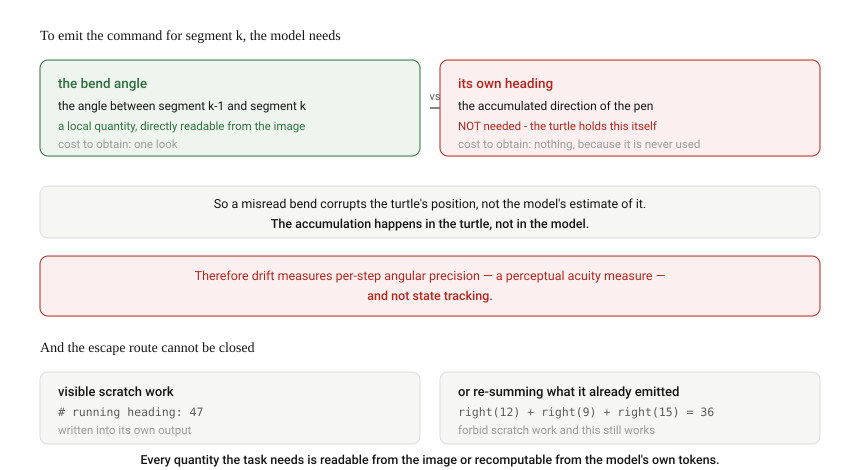

Findings
Nine shapes. Eight results. One dead end.
Everything below is produced by python analysis/run_all.py from fixed seeds, with
no dependencies and no network access. Every number is reproducible on your machine in about
thirty seconds.
On this page
- The items are degenerate
- Degeneracy has two doors
- Degeneracy is joint, not intrinsic
- The test returns a lower bound only
- The scaling test
- Drift grows as √N, and accumulates in the turtle
- Turtle output costs linearly, SVG does not
- The structural problem
- The floor check, and the four bugs it caught
- Summary table
1. The items are degenerate
The flagship item was a 199-command Archimedean spiral. It is reproduced by eight numbers to within a quarter of one percent of its own diameter. That is not an approximation a human would notice, and it is not an approximation a metric should call wrong.

forward(a₀+a₁u+a₂u²+a₃u³); right(b₀+b₁u+b₂u²+b₃u³) for u ∈ [−1, 1]. Eight
coefficients. Mean symmetric path distance 0.27% of diameter, coverage 100%.
The reason is visible in the kinematics. Turn angle per step has a coefficient of variation of 3.74% — it is very nearly constant — and step length is very nearly a smooth function of the command index. Two low-order polynomials therefore carry the whole shape, and the reproducing program is a loop with a counter that consults no accumulated state at any point.
The task was supposed to force state tracking. A program whose every command is a function of the index alone cannot track state, by construction, so this item cannot measure state tracking no matter what a model does with it.
Table 1 extends this to nine shape families spanning analytic, periodic and random constructions. Six are reproduced by programs of at most 24 parameters.
| Shape family | Segments | Cheapest state-free program | Params | Error | Hops | Verdict |
|---|---|---|---|---|---|---|
| circular arc | 199 | periodic, p=5 | 10 | 0.00% | 8 | dead — both |
| 5-point star | 10 | periodic, p=4 | 8 | 0.00% | 10 | dead — both |
| regular zigzag | 199 | periodic, p=12 | 24 | 0.00% | 1 | dead — both |
| spiral | 199 | polynomial, d=3 | 8 | 0.27% | 16 | dead — both |
| irregular staircase | 200 | periodic, p=6 | 12 | 0.41% | 2 | dead — both |
| bounded random walk | 199 | polynomial, d=3 | 8 | 2.59% | 129 | survives |
| sine wave | 199 | polynomial, d=2 | 6 | 13.81% | 9 | dead — hops |
| aperiodic irregular | 199 | polynomial, d=3 | 8 | 28.99% | 84 | survives |
| varying curvature | 199 | polynomial, d=2 | 6 | 54.51% | 186 | survives* |
* See §4 below — this verdict is an artefact of the fitter's search class and is wrong.
Note the ordering. The shapes that look most impressive in a demonstration — a spiral, a clean circular arc, a star — are the ones that die most completely. This is not a coincidence: smooth analytic curves are exactly the shapes that admit compact closed forms. That is why they are easy to draw, and why they are useless as probes.
2. Degeneracy has two doors
An item is only valid if it is expensive to solve by every cheap route. The project originally guarded one route: can a small program draw it? It did not guard the second: can a few absolute moves draw it?

The second door is the more dangerous of the two because it costs nothing in fidelity. A model that reads a landmark off the image, jumps to it, and repeats produces a correct drawing while accumulating no state at all — and therefore produces no drift to measure. The metric does not merely miss the bypass; it reports a perfect score for it.
3. Degeneracy is joint, not intrinsic
Both doors depend on the grading tolerance, and the grading tolerance is chosen by the experimenter. Table 2 varies nothing else.

| Shape family | 0.5% | 1% | 2% | 5% |
|---|---|---|---|---|
| spiral | 33 | 23 | 16 | 10 |
| sine wave | 21 | 13 | 9 | 6 |
| circular arc | 17 | 12 | 8 | 5 |
| 5-point star | 11 | 10 | 10 | 10 |
| regular zigzag | 199 | 199 | 1 | 1 |
| varying curvature | 199 | 192 | 186 | 179 |
| irregular staircase | 28 | 4 | 2 | 1 |
| bounded random walk | 185 | 165 | 129 | 26 |
| aperiodic irregular | 153 | 123 | 84 | 27 |
A regular zigzag presents as high-frequency, many-turn and visually intricate. It requires 199 absolute moves at 1% tolerance and one at 2%, because at 2% of its diameter it is a straight line.
The question "is this item degenerate?" has no answer in isolation. The answerable question is "at this tolerance, under this search class, is it?" — and both parameters are chosen by the person doing the measuring. A binary pass/fail verdict conceals the fact that the experimenter selected the answer.
4. The test returns a lower bound only
The fitter searches a deliberately small hypothesis class: polynomial turn and step sequences to degree 3, and periodic sequences to period 12. A shape outside that class is scored as valid even when it is an obvious closed form.
The varying curvature family is the worked example. Table 1 scores it VALID with 54.51% error. It was generated by:
right(6 + 4 * sin(2 * pi * i / 60))
forward(9)Three constants and a loop counter. A sinusoid is neither polynomial nor periodic at the sampled resolution, so the fitter cannot see it. The verdict is therefore always "no cheap program found", never "no cheap program exists". Widen the class and more items die.
Item validity rests on an assumption that cannot be proved, only failed to be disproved. Every "VALID" verdict in this paper is a lower bound on how degenerate the item is, and the bound is set by how hard we happened to look.
5. The scaling test
Tests A and B both depend on a tolerance we chose. The scaling test does not. It asks not whether a cheap program fits, but how the required fit cost scales with the length of the shape. A shape whose fit cost is constant in N has a name; a model that recognises the name reproduces it exactly at any length.

| Shape family | N=25 | N=50 | N=100 | N=200 | Behaviour |
|---|---|---|---|---|---|
| spiral | 4 | 4 | 4 | 4 | flat — degenerate |
| circular arc | 2 | 2 | 2 | 2 | flat — degenerate |
| 5-point star | 4 | 4 | 4 | 4 | flat — degenerate |
| regular zigzag | 4 | 4 | 4 | 4 | flat — degenerate |
| irregular staircase | no fit | 4 | 4 | 4 | flat — degenerate |
| sine wave | no fit | no fit | no fit | no fit | grows — valid |
| varying curvature | no fit | no fit | no fit | no fit | grows — valid |
| bounded random walk | no fit | no fit | no fit | no fit | grows — valid |
| aperiodic irregular | no fit | no fit | no fit | no fit | grows — valid |
This is the only test in the work that is not an artefact of a threshold we chose, and its result is unambiguous: the same four parameters draw the spiral whether it has 25 segments or 200. Where a fixed-tolerance test gives a verdict, the scaling test gives a shape.
6. Drift grows as √N, and accumulates in the turtle
Two supporting measurements constrain the experimental design regardless of the validity question. The first is how the signal grows with program length.

| Segments | σ = 0.5° | σ = 1.0° | σ = 2.0° |
|---|---|---|---|
| 50 | 4.4% | 8.8% | 17.4% |
| 100 | 6.1% | 12.2% | 24.3% |
| 200 | 8.8% | 17.5% | 34.5% |
| 500 | 13.8% | 27.4% | 53.2% |
| 1000 | 19.3% | 38.0% | 71.7% |
| SVG form | flat | flat | flat |
Drift is a random walk in position, so it grows as √N rather than linearly. The practical consequence is severe: to double the drift signal, the program length must be quadrupled, while its token cost grows linearly. A length sweep buys signal very slowly.
Drift grows in the turtle's position, not in the model's representation. A misread bend corrupts the turtle's downstream position because the turtle integrated the error. The model never needed to hold that quantity. So the drift metric measures per-step angular precision — a perceptual acuity measure — rather than state tracking. See §8.
7. Turtle output costs linearly, SVG does not

| Segments | Turtle tokens | SVG tokens | Ratio |
|---|---|---|---|
| 50 | 300 | 20 | 15× |
| 100 | 600 | 20 | 30× |
| 200 | 1,200 | 20 | 60× |
| 500 | 3,000 | 20 | 150× |
| 1000 | 6,000 | 20 | 300× |
This is the cost of the format choice, independent of whether the probe works. The turtle form buys nothing over SVG unless it constrains the computation — and §8 shows it does not.
8. The structural problem
The findings above are correctable. Item families can be replaced, tolerances pre-registered, search classes widened. This one is not correctable, and it is the reason the line of enquiry is closed.

To emit the command for segment k, a model needs the turn from segment k−1 to segment k. That is the angle between two adjacent pieces of the picture — a local quantity, readable straight off the image. The model does not need to know its own heading, because the turtle's heading is ground truth and the turtle maintains it.
A model is forced to know its own state in exactly three situations: to close a path back onto its start, to place a later stroke at a location defined relative to the start, and to avoid crossing a stroke already drawn. In all three it can escape by reading the target off the image and using an absolute move — the second door of §2.
Suppose the escape hatch is forbidden. The model's output is still text: it can write
# heading: 47 mid-program and attend back over it at every subsequent token. Suppose
intermediate reasoning is also forbidden, by strict parsing. The model can still recompute the
running total at each step by summing the turn values it has already emitted, because it can see
them.
There is no configuration of this task that forces the computation into a non-textual channel. Every quantity it requires is either readable locally from the image or recomputable by summing the model's own emitted tokens. That is a property of an architecture whose only output is text, and no item design changes it.
What survives is narrower and still falsifiable: do models have a perceptual shortcut that beats a text-strategy baseline? That is a real question with a real experiment behind it. It is not "do models think in images?", and the distance between those two framings is the whole distance between this being a paper and being a press release.
9. The floor check, and the four bugs it caught
Every metric in this work is validated by feeding it the exact answer — the program that generated the shape — and asserting that it scores zero. This is not a formality. Four bugs in our own measurement code were found this way, and all four had made the headline result look better than it was.
| Bug | Effect |
|---|---|
| Kinematics were derived from a path resampled to equal arc length. | Resampling to equal arc length forces every segment to the same length by construction. The step-length sequence was erased, and the test was silently measuring turn angles only. |
heading -= turn instead of heading += turn in the integrator. |
Every candidate reproduction was compared against a mirror of the target. Because the metric is nearest-point, a mirrored smooth curve still scores well, so the error did not announce itself. |
| Alignment returned a centred shape and scored it against an uncentred original. | A constant translation error was injected into every measurement. |
| The rotation search was unseeded. | For symmetric shapes the search locks onto the wrong symmetry axis — a five-point star is invariant under 72° rotations — and reports a large error for an exact reproduction. |
The measured error of the flagship spiral was 3.03% before these fixes and 0.27% after. The headline finding had been understated by a factor of eleven by bugs that made the instrument look better than it was.
All nine families now score 0.0000% on their own generating program. The harness asserts this on every execution and exits non-zero if it fails, so the results cannot be read without the check having passed. See Reproduce.
Summary table
| Result | Number | Source |
|---|---|---|
| Spiral reproduction error | 0.27% of diameter | degeneracy_sweep.txt |
| Spiral reproduction cost | 8 parameters | degeneracy_sweep.txt |
| Turn-angle coefficient of variation | 3.74% | shape_degeneracy.txt |
| Families dead on both doors | 6 of 9 | degeneracy_sweep.txt |
| Hops to draw a regular zigzag | 1 at 2% tolerance | degeneracy_sweep.txt |
| Same zigzag at 1% tolerance | 199 hops | degeneracy_sweep.txt |
| Scaling test, spiral N=25 → N=200 | 4 → 4 params | degeneracy_sweep.txt |
| Drift, 50 → 1000 segments | 8.8% → 38.0% | turtle_drift.txt |
| Drift growth exponent | √N (3.11× vs √10 = 3.16) | turtle_drift.txt |
| Turtle token cost, 1000 segments | 300× the SVG form | turtle_drift.txt |
| Floor check, all nine families | 0.0000% | degeneracy_sweep.txt |
| Bugs found in our own metrics | 4 | Appendix A |
The method that generalises from all of this is on the next page: five rules for establishing whether a proposed probe can work at all, before any model is called.